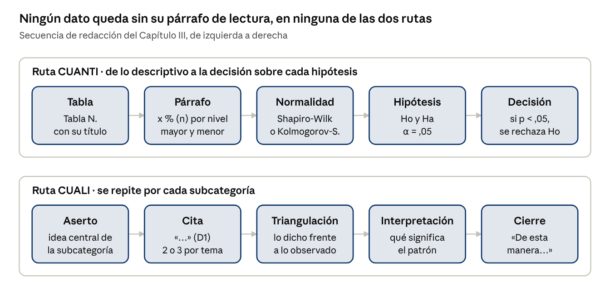

Parte II · Guía de redacción sección por sección
11. Capítulo III: Resultados
Los resultados presentan lo hallado, objetivo por objetivo, sin citar autores ni compararlos con otros estudios; eso se reserva para la discusión. Cada tabla o cita va acompañada de un párrafo que la lee e interpreta. Extensión orientativa: 8 a 15 páginas.

La ruta cuantitativa avanza de la tabla a la decisión estadística; la cualitativa, del aserto al cierre. Elaboración propia.
11.1. Ruta cuantitativa
| Plantilla | Contenido |
|---|---|
| 3.1 | 3.1. Resultados descriptivos: 3.1.1 [V1] y sus dimensiones; 3.1.2 [V2] y sus dimensiones |
| 3.2 | 3.2. Prueba de normalidad (o equivalencia inicial, en diseños con intervención) |
| 3.3 | 3.3. Contrastación de hipótesis: 3.3.1 general; 3.3.2 en adelante, específicas |
Nota. Elaboración propia.
Fórmula del párrafo descriptivo (debajo de cada tabla)
En la Tabla [N] se observa que el [x %] ([n]) de los estudiantes se ubica en el nivel [MAYORITARIO] de [V o DIMENSIÓN], mientras que el [y %] ([n]) se encuentra en el nivel [SEGUNDO] y solo el [z %] ([n]) alcanza el nivel [MINORITARIO]. Estos datos indican que [LECTURA PEDAGÓGICA EN UNA ORACIÓN].
Se destaca el valor mayor y el menor; no se repite en prosa toda la tabla.
Fórmula de la prueba de normalidad
Dado que la muestra es de [n] casos, se aplicó la prueba de [SHAPIRO-WILK / KOLMOGOROV-SMIRNOV]. Como se aprecia en la Tabla [N], los valores de significancia fueron {menores / mayores} a ,05 en [VARIABLES o DIMENSIONES]; por tanto, los datos {no siguen / siguen} una distribución normal y se emplea [ESTADÍSTICO].
Fórmula de la contrastación de hipótesis (se repite por cada hipótesis)
- Hipótesis. Ho: No existe relación significativa entre [V1] y [V2]… / Ha: Existe relación significativa entre [V1] y [V2]…
- Criterio. Nivel de significancia: α = ,05. Regla de decisión: si p < ,05, se rechaza Ho.
- Tabla con el coeficiente, el valor p y el n.
- Lectura. Como se aprecia en la Tabla [N], el coeficiente [RHO] fue de [VALOR] con un valor p = [VALOR]; {por tanto, se rechaza la hipótesis nula y se acepta la alterna / por tanto, no se rechaza la hipótesis nula}.
- Interpretación. Ello indica que existe una relación [POSITIVA / NEGATIVA] de magnitud [MAGNITUD] entre [V1] y [V2]: a mayor [V1], mayor [V2].
| Valor absoluto del coeficiente | Magnitud |
|---|---|
| ,00 a ,19 | Muy baja |
| ,20 a ,39 | Baja |
| ,40 a ,59 | Moderada |
| ,60 a ,79 | Alta |
| ,80 a 1,00 | Muy alta |
Nota. Escala orientativa; la tesis debe citar la fuente de la escala que adopte. Para el tamaño del efecto en diseños con intervención se usa Cohen (1988): ,10 pequeño; ,30 mediano; ,50 grande.
Notación APA en español. Se elige coma o punto decimal y se mantiene en toda la tesis. Los valores que no pueden superar 1 (p, Rho, r, α) se escriben sin cero inicial (,05). Los símbolos estadísticos van en cursiva (p, n, r).
11.2. Ruta cualitativa
Se organiza un subtítulo por objetivo específico y un apartado por subcategoría: 3.1 [Subcategoría 1], 3.2 [Subcategoría 2] y, al final, 3.n Categorías emergentes.
Fórmula ACI: aserto, cita e interpretación
1. Aserto. Respecto a [SUBCATEGORÍA], los [DOCENTES / ESTUDIANTES] {manifiestan / evidencian} que [HALLAZGO CENTRAL].
2. Cita. Así lo expresa la docente [CÓDIGO]: «[CITA BREVE]». En la misma línea, [CÓDIGO] señala: «[CITA]».
3. Triangulación. Lo observado en el aula ([CÓDIGO]) {confirma / matiza / contradice} lo declarado, pues [EVIDENCIA OBSERVADA].
4. Interpretación. Estos testimonios revelan que [SENTIDO]; es decir, [EXPLICACIÓN DEL PATRÓN].
5. Cierre. De esta manera, [SÍNTESIS DE LA SUBCATEGORÍA].
| Código | Fuente | Ejemplo de cita |
|---|---|---|
| D1, D2 | Docente entrevistado | «…» (D1) |
| E1, E2 | Estudiante | «…» (E3) |
| PF1 | Padre o madre de familia | «…» (PF1) |
| O1, O2 | Ficha de observación con fecha | (O2, 14/05/2026) |
| AD1 | Análisis documental | (AD1, sesión de aprendizaje) |
Nota. Elaboración propia.
Reglas para las citas
- Dos o tres citas por subcategoría, de no más de tres líneas cada una.
- Nunca una cita sin el aserto que la presenta ni la interpretación que la cierra.
- Se respeta el habla del participante; las omisiones se marcan con […].
- Una figura de red o una matriz puede sintetizar cada categoría al final del apartado.